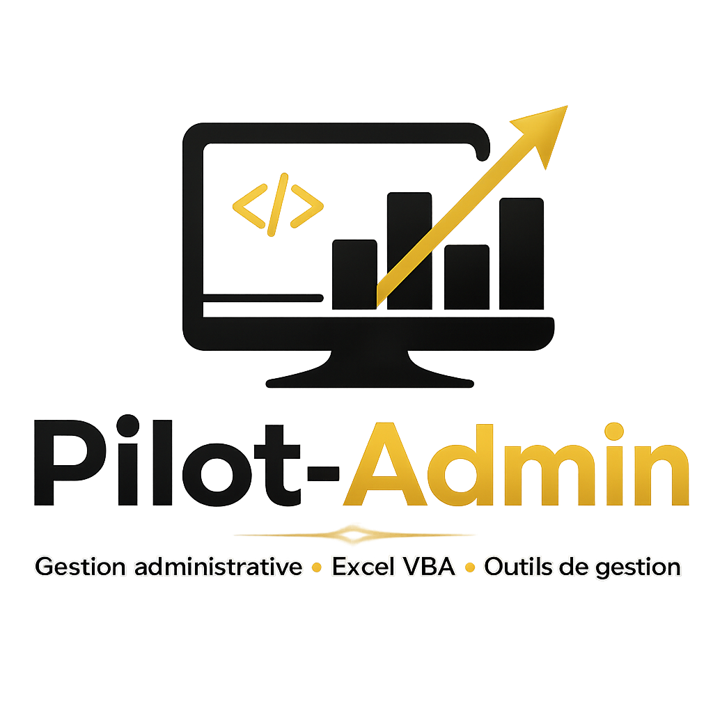

Votre partenaire administratif et informatique à distance partout en France.
Pilot-Admin accompagne les artisans, indépendants, TPE et PME dans la gestion quotidienne de leurs tâches administratives et l'optimisation de leurs outils de travail.
Notre objectif est simple : vous faire gagner du temps afin que vous puissiez vous concentrer pleinement sur le développement de votre activité.
Nous intervenons exclusivement à distance dans toute la France pour assurer un accompagnement souple, réactif et efficace.
Assistance administrative, suivi documentaire, gestion de courriels, devis, facturation et relances clients.
Création de tableaux de bord, automatisation de tâches, reporting et développement d'outils personnalisés.
Développement de solutions sur mesure pour le suivi d'activité, la maintenance, les contrats, les interventions ou le SAV.
Intervention partout en France sans déplacement ni contrainte géographique.
Prise en charge rapide des demandes et suivi rigoureux des dossiers.
Chaque entreprise possède ses propres besoins. Nos outils et méthodes s'adaptent à votre activité.
Entreprise : Pilot-Admin
SIRET : 881 713 788 00027
Code APE : 8211Z - Services administratifs combinés de bureau
Téléphone : 06 58 85 68 80
Email : contact@pilot-admin.fr
Zone d'intervention : Toute la France - 100 % à distance